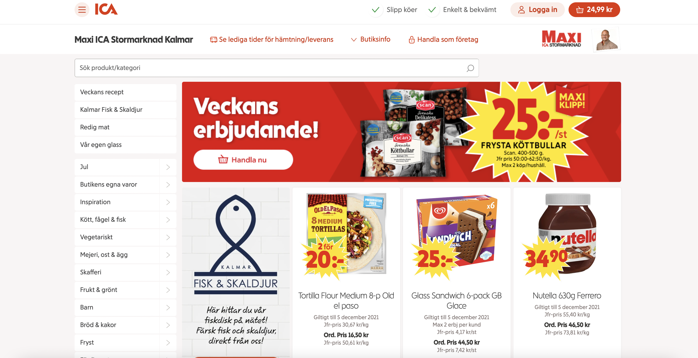

Navigering
Global respektive lokal navigering
Global navigering innebär navigering inom hela webbplatsens delar. Denna typ av navigering finns alltid till hands, t.ex. i en sidebar eller liknande. Å andra sidan innefattar lokal navigering endast navigering inom en sida. Båda är till för navigation, men på olika nivåer i webbplatsen.
Supplementary respektive courtesy navigering
Supplementary navigation förser användaren med länkar som är relaterade till innehållet. Dessa är länkar som kan vara intressanta för användaren. Ett exempel på detta är YouTubes rekommendationsfält, där man kan hitta videor som liknar den man just tittat på.
Courtesy navigation är navigering som är till för att stödja användaren med länkar som kan vara hjälpsamma i dess kontext. Ett exempel på detta är länkar som innehåller kontaktinformation eller som leder till en supportsida, och detta är speciellt viktigt för hemsidor för produkter och tjänster, där användare med stor sannolikhet kommer behöva kontakta företaget som erbjuder produkten eller tjänsten.
En likhet med supplementary och courtesy navigation är att de båda finns till för att underlätta för användaren, men samtidigt är de inte avgörande för webbplatsens funktionalitet. Alltså är de båda något valbart att ha med på en hemsida, men något som användare med hög sannolikhet kommer ha nytta av.
En skillnad mellan supplementary och courtesy navigation är att supplementary är väldigt brett jämfört med courtesy navigation. Supplementary kan tjäna användaren på många olika sätt, t.ex. genom att öka användarens engagemang eller för att hänvisa till andra sidor. Courtesy navigation är mer specifikt då dess syfte är att hjälpa med länkar som så att säga “visar vägen”.
https://www.ica.se/handla/maxi-ica-stormarknad-kalmar-id_02597/På denna webbsida kan man se lokal navigation i och med sidebaren till vänster, som har alla kategorier av mat.
https://www.ica.se/På Icas startsida finns global navigation högst upp i top baren. Det finns även supplementary navigation i form av inspirationsartiklar, som man hittar om man skrollar ned. Längst ned i footern kan man även hitta courtesy navigation, där flera länkar så som kontakt finns.
